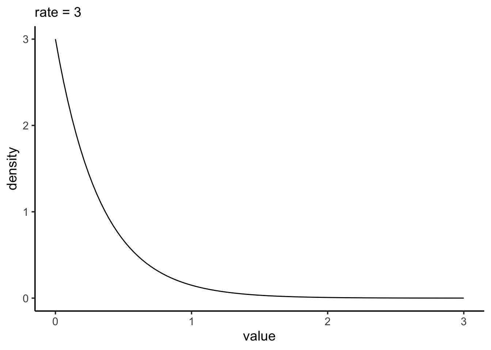

Iteration and Functions
0. Intro
You’re going to be using tidyr, purrr, dplyr, and more today. Might want to start the head of your script with just library(tidyverse) so you don’t have to worry too much. Set a ggplot theme if you want!
1. Basic function and iteration.
1a. You guys have done a LOT this week. It’s been your big week of leveling up, and I have no doubt you’ll be slowly grappling with and incorporating the concepts of the week into your work as we go along. So, write a function that takes no arguments, but tells you (using cat(), paste(), print() or whatever) “You’re doing a great job!”
1b. Have it tell you this 10 times! Use replicate() for the first five and map_chr() for the second 5.
1c. Impress Yourself/Learn something new - try purrr:::walk() - how does it differ from map()? Do you need to modify the function to make it work and give you words of affirmation?
2. Visualizing the Exponential distribution
The normal distibution is fun, but let’s play with another one! The exponential distribution is a continuous distribution that is bounded at 0 and has an infinitely long tail. It’s skewed to 0, and takes a rate as it’s argument to determine its shape.

2a. Write a function that will take a rate, a minimum, and maximum as its inputs (let’s make the defaults for min and max be 0 and 4 respectively) and returns a data frame or tibble with three columns. The first is the rate (the input). The second is a sequence of 100 numbers between the min and max. The third is the probability density of the exponential distribution at that value given the rate. Take a look at dexp() for this. the d* functions for distributions are increibly useful for visualizing distributions when you don’t understand what they look like under different parameter values. Show that your function works by making a ggplot for rate = 3 that should look more or less like what is above.
2b. Use purrr::map_df() and a vector of rates - c(0.2, 0.5, 1, 2, 4) to create a data frame or tibble with the above function that, for each rate, has values of x and the probability density of x.
2c. Plot the result in a way that shows the influence of rate on the shape of the curve. What do higher or lower rates do to the shape of an exponential distribution? Does this make sense if rate = the number of events per interval on average and this is the distribution of time between events from a random process?
3. Precision and Sampling the Exponential
3a. Write a function that, given a vector, will return a data frame or tibble of that vector with a mean and median. Test is with a vector to make sure it’s doing the right thing.
3b. Write a function that, given a sample size and a rate, take a sample from an exponential distribution and then use the above function to return the mean and median as a data frame. Show us it works. One way to do this is by setting a seed before drawing a random sample and then getting the mean and median, and then setting the SAME seed before running your function.
3c. Write a function that, given a sample size, rate, and number of simulations (which defaults to 1e3), returns a data frame with however many rows of means and medians given your number of simulations. Show it works by plotting the distribution of means and medians for rate = 2 and sample size = 10. IMPRESS YOURSELF by doing this in only one ggplot using pivot_longer() to get the data into shape for plotting.
3d. Let’s bring it all together. Use the function tidyr::crossing() to make a tibble with all possible combinations of sample sizes c(3,5,7,9) and rate c(1, 1.5, 2, 4). See the helpfile and learn one of your new favorite functions! Take a look at the result!
3e. With this data frame, use group_by() on sample size and rate and summarize on combination with the simulation function above to get simulated means and medians at all different parameter combinations. Show us you have done so by plotting the distributions of your medians using facet_grid() to split up rate/sample size combinations.
3f. With this result, group by rate and sample size again and calculate the sd of each measure. Then plot the resulting curves showing the influnce of sample size on the precision of our estimate for mean and median. What does this tell you? Note, again, you might want to think about pivot_longer() to get everything into a nice format for use with ggplot()
3g. Well. What should your sample size be and why under different rates?
Impress Yourself
So, calculating bootstrapped SEs for estimated quantities is not that different. The big difference is that rather than randomly sampling from a distribution, as in 3b, you’d randomly sample from, well, a sample! We do this with the function sample() like so.
my_sample <- c(4,7,2,7,2)
sample(my_sample,
size = length(my_sample), #same sample size
replace = TRUE) #with replacement[1] 7 2 7 7 2Try this a few times so you know what it’s doing.
IYa. Now, write a function that takes a sample vector and returns one bootstrapped sample.
IYb. Cool! Now, write a function that takes a sample as its input, and gives you the bootstrapped mean and median in a data frame using the function you wrote in number 3.
IYc. You are almost there!
Now…….. write a function that takes a sample and a number of bootstrap replicates (default it to 1e3), and uses the function you just wrote to get a bunch of bootstrapped means and medians, and then uses that result to calculate the bootstrapped SEs.
IYd. OK - test it on the following
set.seed(607)
my_samp <- rexp(20, 1.8)You should get
# A tibble: 1 × 2
mean_se median_se
<dbl> <dbl>
1 0.144 0.153Meta 1.
Whew. We covered a lot this week. How much of this - functions and iteration - was new to you? How much of it was familiar or at least made sense? How much was totally alien and offputting?
Meta 2.
What are possible uses you could see using functions for? What about iteration?
Meta 3.
How did your pogress through this assignment feel? Did you find yourself speeding up as you went along? Are there things that clicked for you along the way? Lightbulbs going off.
Meta 4.
There are a lot of things that also re-appear this week. ggplot, tidyr and pivoting, dplyr, pipes, and more. Are they becoming old friends? What apsects of them are you still struggling with, if at all?
Meta 5.
How much time did this take you, roughly? Again, I’m trying to keep track that these assignments aren’t killer, more than anything.
Meta 6.
Please give yourself a weak/sufficient/strong assessment on this assignment. Feel free to comment on why.